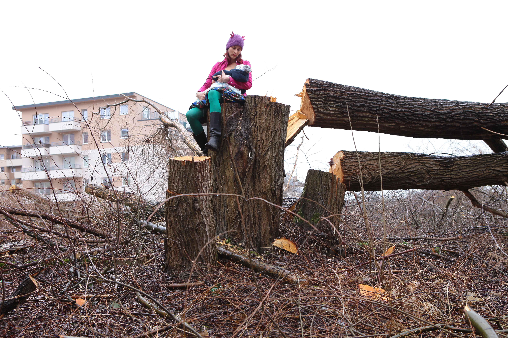
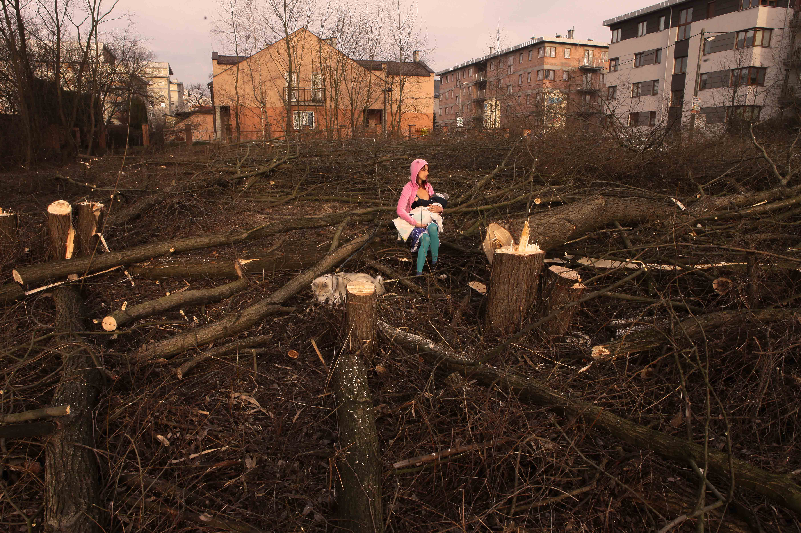
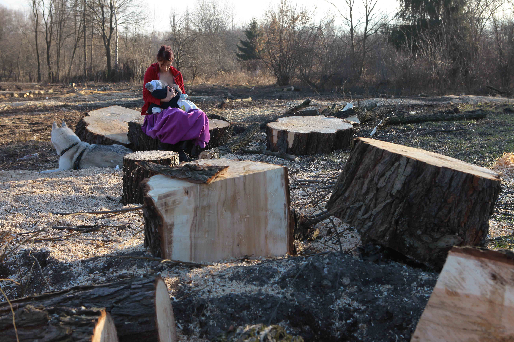
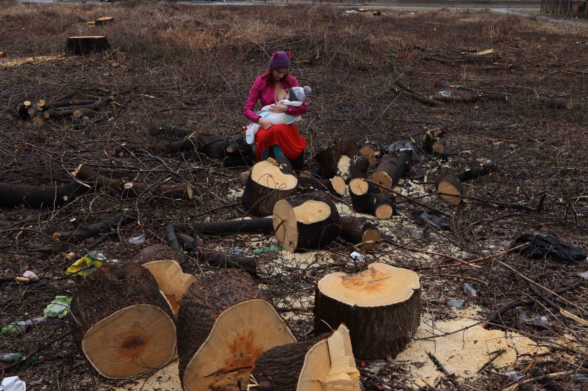
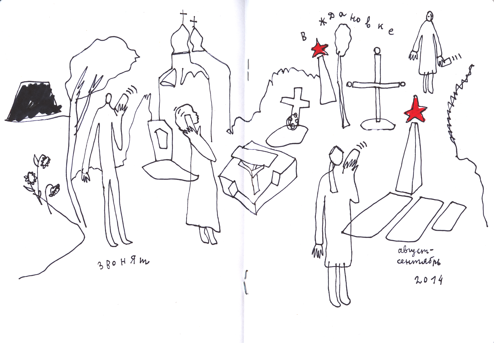
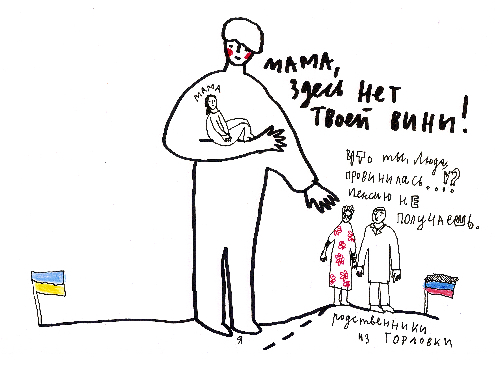

Introduction
In a political situation in which care is both exceptionally necessary and exceptionally underprovided,” writes artivist Harry Josephine Giles, “acts of care begin to look politically radical. To care is to act against the grain of the social and economic—as well as ideological— orthodoxy: to advocate care is. . . to advocate a kind of political rupture.” In Central and Eastern Europe, where authoritarian regimes and illiberal democracies have been aggressively suppressing any forms of solidarity, curiosity, and tolerance by silencing and disenfranchising artists, expelling NGO organizations, and debilitating social movements, building allyship with ethnically, racially, religiously different communities, with the most vulnerable and disenfranchised populations has indeed become an act of ‘radical care.’
With the takeover of populist and nationalist governments in the global scene, advocating and practicing care have become an ethical commitment. Radical care, in this moment, demands that activists, artists, and scholars rethink the conditions of equality, togetherness, and diversity. It is the main organizing principle for the newly emerging social movements that take a moral stance on what it means to forge a community and what it takes to reimagine coexistence and cohabitation outside of the already established hierarchical sociopolitical structures, where one is always, inevitably in a superior position, while the other is in need of help. Radical care proposes mutual recognition and mutual aid; it envisions alternative forms of solidarity and acts of sharing.
The artists presented in this exhibition perform acts of radical care in three different ways: by making invisible experiences and existences visible, by becoming a protector instead of a protester, and by daring to acknowledge a radical political rupture in order to allow the potential of social change. Hungarian photographer, Andi GV and the Ukrainian visual artist Alevtyna Kakhidze both evoke the lives of those who live in liminal geopolitical spaces, dehumanized and unclaimed by the nation states and international organizations that have determined and continue to determine their fates from above. Through their distinctive art forms, Andi GV through photography, while Kakhidze with pencil and ink, they both redraw the contours and shades of those, whose lives have been erased in and by the mainstream media and in public discourse.
The artworks of Polish artist and artivist Cecylia Malik and the Belarusian artist Masha Svyatogor demonstrate how performances of radical care may reframe the position of the activist: protestors become protectors through their affective advocacy of ecological, racial ethnic, labor, and human rights causes. Malik initiated a national movement when she photographed herself while nursing her child on the trunks of logged trees to draw attention to the senseless massacre of forests and the Polish government’s irresponsible destruction of the environment. Simultaneously, Svyatogor’s colorful socio-fantastic images reflect on the artist’s anxiety-fueled liminal position in the contemporary post-Soviet Belarusian labor market. Stuck in the dialectic of artmaking as neoliberal production (work) versus Soviet-typed ideological or dissident vocation (non-work), many of the artists are forced to endure radical financial instability, debasing work conditions, and disorienting socio-economic relations. For Svyatogor, this existential crisis becomes the creative source which inspires her to imagine a “brave new world” in which artists might define their own place and status in society.
This exhibition, at the same time, proposes that protest actions can also constitute acts of radical care. Days after the Belarussian resistance movement erupted to protest against President Alexander Lukashenko’s stolen elections, the embroideries of Rufina Bazlova started to circulate on the internet. The artist, who lives and works in the Czech Republic, has captured some of the most important—both tragic and uplifting—events surrounding the protests. By referencing the local folk tradition of embroidery, Bazlova exposes the radical rupture rooted within the national and political identity of the Belarusian state. Even though they fight on two opposite sides, the protesters and law enforcement, the victims and the perpetrators, are all weaved into the same Belarusian fabric. Similarly, the Polish LGBTQ+ activists, have chosen to subvert one of the most iconic Polish object, the “Black Madonna of Częstochowa,” in order to visualize the political and religious schism within the Polish national body: while the Black Madonna and Baby Jesus peacefully wear the rainbow colored halos around their heads, the creators of the posters have been arrested and persecuted by the state.
Each of these artists perform artivism in their own distinctive ways, still, they all succeed in accomplishing the ultimate goal of radical care: they build communities and inspire them to envision new social realities. Through their works, the organizers of this conference and the curators of this exhibition invite all of you to do the same.
Masha Svyatogor
Masha Svyatogor (b.1989) is a Belarusian visual artist based in Minsk. In 2013, she graduated from the Belarusian State University where she studied philology. Her first solo exhibition, “Kurasoushchyna, My Love,” debuted in 2017 in Minsk, Belarus. Her work has been shown internationally at the following festivals: Circulation(s) in Paris (2020), Fotofestiwal Łódź (2020), Month of Photography in Minsk (2019), Batumi Photodays (2019), Kolga Tbilisi Photo Festival (2018), Obscura Festival of Photography in Malaysia (2018), Fotopub Festival in Novo Mesto, Slovenia (2017), Queering Yerevan festival (2017), Warsaw Photo Days (2017), and others. She has been nominated by Fotofestiwal Lodz as one of the Futures Talents 2020. In 2018, she received the Best Photographer award at the Month of Photography festival in Minsk. Svyatogor works on personal long-term art projects relating to contemporary issues, post-soviet history, society, identity. In her latest projects, the artist creates works using official photos from magazines published in the USSR and her own photographs. Newly created images, inspired by communist symbols and typical forms of propaganda messages, show the Soviet culture in a surrealistic mirror. Her works at times engage with kitsch and the absurd. By combining elements of different historical and aesthetic traditions, the artist highlights eccentricities and paradoxes of everyday life in Soviet and post-Soviet Belarus. She builds a critical message and encourages her viewers to go beyond their held preconceptions and art consumption habits by inviting them to take a better, closer look.
The series “We Will Build a Brave New World” was first published as a set of illustrations that accompanied Tania Arcimovich’s essay, “We Will Build a Brave New World—On the Status and the Working Conditions of an Artist in Belarus” on Status Research Platform in 2019. Svyatogor’s vivid socio-fantastic images reflect on the artist’s anxiety-fueled liminal position in the contemporary post-Soviet Belarusian labor market. Stuck in the dialectic of artmaking as neoliberal production (work) versus Soviet-typed ideological or dissident vocation (non-work), many of the artists are forced to endure radical financial instability, debasing work conditions, and disorienting socio-economic relations. For Svyatogor, this existential crisis becomes the creative source which inspires her to imagine a “brave new world” in which artists might define their own place and status in society.

We will build a brave new world, 2019
250 x 213.3 cm (h x w)
Mixed-media

We will build a brave new world, 2019
250 x 194.5 cm (h x w)
Mixed-media

We will build a brave new world, 2019
54.9 x 60 cm (h x w)
Mixed-media
We will build a brave new world, 2019
150 x 60 cm (h x w)
Mixed-media
Matka Boska z Tęczową Aureolą (Mother of God with a Rainbow Halo)
Human rights activist Elżbieta Podleśna was arrested on May 6, 2019 for allegedly hanging posters of the Virgin Mary and Baby Jesus with their halos painted in the colors of the rainbow flag, in the small Polish town of Płock. The placards appeared one April morning on public toilets and trash cans, near the church that had earlier displayed a provocative Easter decoration (including cardboard signs spelling out different words such as “LGBT” and “Gender”). After hours of interrogation, Podleśna was charged with “offending religious feelings,” a criminal act that is punishable by imprisonment of up to two years under the Polish penal code. After more than a year, in June 2020, the charges against Podleśna were finalized. She and two other activists are now formally charged.
The poster that was created by a group of LGBTQ+ activists—the identity of the designer is to remain anonymous to protect them from potential criminal persecution—is an adaptation of the most revered Byzantine icon, the “Black Madonna of Częstochowa,” which is guarded in the monastery of Jasna Góra, a UN world heritage site and Poland’s holiest Catholic shrine. In the months preceding this poster action, the ruling Polish Law and Justice (PiS) party had started to aggressively attack the LGBTQ+ community to please their conservative voters, both in the presidential and the EU parliament elections that took place in 2019. The nationalist ideologues denounced the LGBTQ+ movement and the concept of gender as “a direct attack on the family and children,” arguing that they “threaten our identity, our nation, its continuation and therefore the Polish state.”
The violent harassment against the LGBTQ+ community continues in Poland in 2020. While at least a third of the local municipalities across the nation have recently declared themselves as “LGBT-free zones,” activists performatively fight these discriminatory measurements. They do so by hanging rainbow flags on public squares, as well as statues of Polish national heroes and religious icons. These activists continue to be physically and verbally attacked, arrested, and legally persecuted under Andrzej Duda’s presidency.

Matka Boska z Tęczową Aureolą (Mother of God with a Rainbow Halo), 2019
91 x 61 cm (h x w)
Digital Mixed Media Collage
Cecylia Malik
Cecylia Malik, born in 1975 in Kraków, is a painter, performer, activist and educator living in Kraków. Her work is developed in close collaboration with scientists and local communities, and blends artistic practice with ecological campaigns and social activism. For example, “356 Trees” (2009-2010), is a performance in a public space, in which she climbed a different tree each day throughout the year; this led to “The Alcon Blue Collective”( 2011, 2014) – an action in which hundreds of citizens in Kraków defended one of the city’s most important green areas, the Zakrzówek district. The project “6 Rivers” (2011-2012), in which she sailed through the rivers of Kraków in a handmade boat became the “Białka Braids” campaign (2013), a work that set out to advocate for the protection of the natural channel of the Białka River. Her recent project, an artistic documentary titled “Paradise on Earth” (2015), was inspired by her long acquaintance with a homeless couple living next to her apartment as well as by an earlier project she created about homelessness, “Concert at Mr Thug’s” (2009). Cecylia Malik also founded the Save the Rivers Coalition in 2017, and organized a nationwide action called the “River Sisters” against the devastating plans to regulate the rivers in Poland. She is a co-founder of the association dealing with art and activism of the CCA Wiewiórka.
“Polish Mothers on Tree Stumps” is an informal civic movement that first arose as a reaction to the mass felling of trees in Poland, after Minister of Environment Jan Szyszko granted legal permission to landowners to cut down trees. The campaign began with Cecylia Malik's month-long protest, during which she breastfed her 6-month-old son Ignacy at different Kraków logging sites. She posted photographs of her performances on Facebook, in an effort to show the scale of the tree massacre. Other moms joined the campaign, and Anna Grajewska joined to share the co-organization. The group’s first performance took place on March 3, 2017 in Kraków. Photographs of the Kraków performance went viral on the Internet and circulated in Polish and European media, becoming an illustration of Szyszko’s Law and launching similar protests in other cities. Mothers with small children visited logging sites all over Poland to document the scale of destruction and demand immediate legal changes the resignation of the Minister of the Environment. An appeal with an image of the performance art-protest “Polish Mothers on Tree Stumps” were sent to President Andrzej Duda and Prime Minister Beata Szydło, while another photograph, as part of a report on the destruction of nature in Poland, was presented by the
“Polish Mothers on Tree Stumps” to Pope Francis. This pilgrimage to Rome was the culmination of a month-long crowdfunding campaign, in which the activists beseeched the Pope for his intervention, as the Polish Catholic Church and Catholic media both supported the Minister of the Environment and his anti-green policy.

Matka Polka na Wrębie (Polish Mother on Felling), 2017
78 x 52 cm (h x w)
Photograph

Matka Polka na Wrębie (Polish Mother on Felling), ul. Kobierzyńska, Kraków, photo: Piotr Dziurdzia, 2017
78 x 52 cm (h x w)
Photograph

Matka Polka na Wrębie (Polish Mother on Felling), ul. Lema, Kraków, 26. 02. 2017, photo: Piotr Dziurdzia, 2017
78 x 52 cm (h x w)
Photograph

Matka Polka na Wrębie (Polish Mother on Felling), ul. Malborska, Kraków, 23. 02. 2017, photo: Piotr Dziurdzia, 2017
132.1 x 198.1 cm (h x w)
Photograph

Matka Polka na Wrębie (Polish Mother on Felling), Kraków, 18. 03. 2017, photo: Piotr Dziurdzia, 2017
132.1 x 198.1 cm (h x w)
Photograph
Andi Galdi Vinko
Andi Galdi Vinko, is an internationally acclaimed artist working in photography. She studied photography at Moholy Nagy University of Art in Budapest and at Esag Penninghen in Paris, as well as art history and aesthetics at ELTE in Budapest. Her work draws visual analogies between intensely personal and intimate experiences of motherhood and womanhood and universal human experiences of coming of age, ageing, loss, and the conflict between western and eastern European ideologies. Using both staged and documentary photography, Galdi Vinko is a vivid visual storyteller who assembles her snapshots into unconventional and unexpected narratives, juxtapositions that are playful and humorous but also elicit pathos and absurdity, often published in the form of zines or editorials. Elisabeth Biondi, a former director of photography at The New Yorker, wrote of Galdi Vinko's series Paradisco, “It captures the underlying quest in her photographic pursuits – to record the general unease experienced by people of her generation as well as their pleasures and joys.” Galdi Vinko has been commissioned by M Le Monde, Die Zeit, i-D, Dazed, Vice, The New Yorker, and Tate, among others. Her personal work has been exhibited internationally in group and solo shows. Recent exhibitions include: Birth at TJ Boulting, London; Sorry I Gave Birth I Disappeared But Now I’m Back at FERi Gallery, Budapest; Golden Boundaries, Robert Capa Center, Budapest and Arles Milllenial au feminin at Galerie du Club des DA, Havas Gallery.
Borders - Like nothing happened 2016
“In the summer of 2015 I spent a few weeks helping refugees as they entered Hungary. I was shocked by what I experienced: I met families running from fear, running for hope. I was unable to take proper photos, only used my iPhone for “remembering”. 4 months later I went back to the then important scenes. The border is closed, the fence works. Empty, abandoned landscapes. No sign of evidence. No sign of history. Upon my return I paired, layered my images with the ones taken that summer. The refugees’ presence is carved in the landscape. To me it remains part of that environment. Part of the now changing European borders.”

Borders, 2016
83 x 125 cm (h x w)
Digital Photography

Borders, 2016
83 x 125 cm (h x w)
Digital Photography

Borders, 2016
83 x 125 cm (h x w)
Digital Photography

Borders, 2016
83 x 125 cm (h x w)
Digital Photography

Borders, 2016
67 x 101 cm (h x w)
Digital Photography

Borders, 2016
67 x 101 cm (h x w)
Digital Photography

Borders, 2016
67 x 101 cm (h x w)
Digital Photography

Borders, 2016
67 x 101 cm (h x w)
Digital Photography
Rufina Bazlova
Rufina Bazlova is a Belarusian artist living and working in the Czech Republic. She studied illustration, bookmaking, and sculpture in Pilsen. In 2010 she received the main prize in the prestigious International Young Package Award for her comics "Cacao goddess." During long-term residencies in Athens and Poznan, she focused on costume design and photography. Her passion for various techniques and media inspired her to create a comic book called "Feminnature" that she embroidered on a dress. Together with a group of artists in Athens, she organised a small eco-project entitled "Lost on the Beach." This included a monumental installation and a book on the beach, made directly of garbage they had collected there for weeks. For some time, Rufina worked as a mural restorer. Recently she has completed her studies in scenography of Alternative and Puppet Theatre at The Academy of Performing Arts in Prague. There, she experimented with light techniques and ways of how use them as a puppet. She is a co-founder of the theatre group "Herring under the Fur." The group is famous for working on taboo topics with totemic puppets that perform in miscellaneous sets. She finds inspiration in traditional crafts, wood, stones, light and gold. Regarding the current political turmoil in Belarus she says: “I cannot stay silent when my country is crying.”
The History of Belorussian “Vyzhyvanka” or Belarus 2020
‘Vyshyvanka’ is the name of the technique of traditional Belarusian embroidering; ‘vyshyvat’
means ‘to embroider’ in Belarusian, while ‘Vyzhyvat’ means to survive. The pun that
Bazlova plays with in the title of her series perfectly conveys the dual essence of her work:
through her embroidery, she
captures some of the most important events —both tragic and uplifting—surrounding the protest
movement against the self-proclaimed ‘landslide’ electoral
victory of President Alexander Lukashenko. At the same time, for Bazlova, embroidering is also a performative act of survival: it is the artist’s cry out against the dictatorial oppression
that has first denied free democratic elections to Belarus and then attempted to violently
suppress the nationwide demonstrations by arresting thousands of protesters and killing at
least three of them. Bazlova’s embroidered images quickly gained attention on social media
and became symbols of the resistance movement: they brought together a transnational
community in Central and Eastern Europe both among the Belarusian diaspora and their
allies to support the persevering protesters from afar.
The History of Belorussian “Vyzhyvanka”, 2020
111 x 61 cm (h x w)
Digital Collage

The History of Belorussian “Vyzhyvanka", 2020
25.7 x 25.7 cm (h x w)
Digital Collage
The History of Belorussian “Vyzhyvanka”, 2020
111 x 61 cm (h x w)
Digital Collage
Alevtina Kakhidze
Alevtina Kakhidze was born in eastern Ukraine. Having lived in Kyiv and Muzychi (Central Ukraine) since 1995, with the exception of a two-year research term at the Jan Van Eyck Academy in Maastricht (2004-2006), Kakhidze’s artistic work has been shaped by her complex cultural identity, which is an amalgam of her Ukrainian,Georgian and West European heritage. She inherited her Georgian surname from her father, and was raised in the Soviet incarnation of Russian culture. The art practice of Kakhidze is based on personal experiences and imagination, and reflects on consumer culture, gender, love, the culture of protest, the experience of war, as well as everyday life, plants and dogs.
Alevtina Kakhidze started to document the war in Donbass, taking place in the border region of Ukraine and Russia, from the earliest events of the political and military conflict in 2014. Her mother, Lyudmila Andreyevna, lived in one of the small towns of the so-called “uncontrolled territories,” which are violently occupied by Russia-backed separatist groups. In spite of her daughter’s—and the Ukrainian state’s—appeal to move away from the dangerous border territory, she chose not to leave her home behind. Instead, she kept in touch with her daughter on the phone, often calling her from the village’s cemetery, the only location where people had reception. Lyudmila would tell her daughter about her everyday life, about the loss of friends and neighbors to separatist shelling, and the dangerous, eleven-hour long journeys on foot she now had to make to the closest Ukrainian town where she could collect her pension and buy groceries. Standing hours in the line at border check points and walking in grueling cold weather for endless kilometers took a toll on her, as it did on many other Ukrainian pensioners. On January 16, 2019, Kakhidze received a call from a separatist fighter: her mother collapsed and died while she was trying to cross the violently drawn border.
Facebook was the first platform on which Kakhidze posted her drawings: day after day, she captured her mother’s experiences through her art. The drawings depicted what life was like on the front line of “the uncontrolled territories.” Her moving, at times playful, at times deeply painful images immediately gained popularity, as more and more people turned to her social media platforms to learn about the news on the war in Donbass. Despite the more than 20 attempts at cease fires since 2015, Kakhidze’s powerful drawings show that the border conflict has continued to define the everyday life of locals. Tens of thousands of Ukrainian citizens persevere in this perpetual liminal social and political existence: marching from their villages and towns to the Ukrainian territories, evading the shells raining from the sky, and calling their loved ones from the shadows of the tombs in the Zhdanivka cemetery. Kakhidze’s ‘news reporting’ also inspired her performance "I am a TV journalist of ALL TIMES NEWS broadcasting company” at the 6th Moscow Biennale of Contemporary Art, “How to Gather?” and the German language performance Anrufe vom Friedhof [Phone Calls from the Cemetery] at the Academy of Cologne.
Strawberry Andreevna: About my mother and me, 2014-2019
21 x 29.8 cm (h x w)
Mixed-media

Portrait when she came dead, 2019
25 x 15.5 cm (h x w)
Acrylic marker and ink, colored pencil



Strawberry Andreevna: About my mother and me, 2014-1019
21 x 29.8 cm (h x w)
Mixed-media
About this Exhibition
Information—
Visual Acts of Radical Care: An Exhibition of Feminist Artists-Activists from Central and Eastern Europe was part of "The Other Europe: Changes and Challenges since 1989," a conference sponsored by the
European Studies Council at the
MacMillan Center at Yale University.
The virtual exhibition took place from Sunday, September 6, 2020 to Sunday, November 29, 2020.
Curator—
Dr. Aniko Szucs, Postdoctoral Associate and Lecturer in Russian, East European, and Eurasian Studies, Yale University
Contributing Artists—
Masha Svyatogor
Cecylia Malik
Andi Galdi Vinko
Rufina Bazlova
Alevtyna Kakhidze